*Disclaimer: Not actually everything. But like 78% of things.
So you have a date. Congratulations! You know what people love more than a good conversation? Flowers. They're like the conversation starter that doesn't talk back.
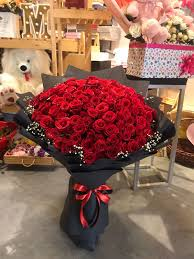
Because saying "I like you" verbally is terrifying. Let red roses do the heavy lifting. They scream romance without the awkward stammering.
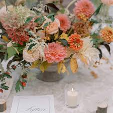
A table setup that says "I didn't just order takeout and eat directly from the container." Your date will be impressed. Their phone will be put down. Maybe.
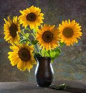
Not ready for the romantic heavy stuff? Sunflowers are the friend zone's friendliest escape route. Bright, cheerful, and they won't be misinterpreted.
The big day. Flowers are basically 40% of the budget and 95% of what people remember. Weird, but true. Let's make it count.
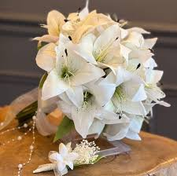
White lilies scream sophistication. They're what a bride dreams about while sitting in traffic to the dress shop. Timeless. Elegant. Not at all extra. (Okay, maybe a little extra.)
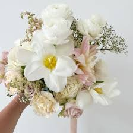
Peonies are the Instagram influencer of flowers. They're fluffy, dreamy, and every bride's secret Pinterest board is basically 80% peonies. We get it. They're gorgeous.
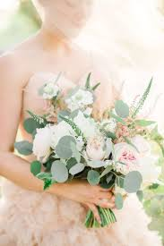
Everything coordinated. The bouquet. The boutonnière. The centerpieces. When your bride walks down the aisle, she'll look like she stepped out of a fairy tale, not a craft fair DIY project.
When words fail (and they usually do), flowers speak volumes. They say what we're struggling to articulate: "I'm sorry. I care. You're not alone in this." Simple. Sincere. Necessary.
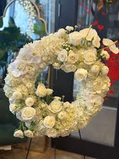
White wreaths are a timeless symbol of respect and remembrance. It's a gesture that says everything without saying a word. A dignified, beautiful tribute to a life well-lived.
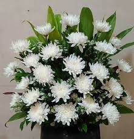
In many cultures, white chrysanthemums represent truth, loyalty, and everlasting love. They're a respectful choice that carries deep meaning for families honoring their loved ones.
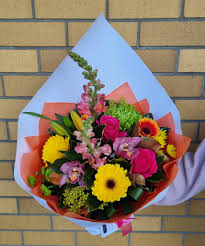
Sometimes the perfect tribute is a gentle mix of seasonal blooms. Soft colors, understated elegance. It conveys love without demanding attention. It's just there, quietly supporting those who grieve.
Who needs a reason? Flowers are the ultimate "I was thinking of you" gesture. Brightens the room. Brightens the day. Possibly saves the relationship. (Jury's out on that last one.)
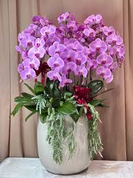
When you want to send the message "You're worth the splurge," orchids are your answer. Exotic, elegant, and they basically say "I have excellent taste in friends."
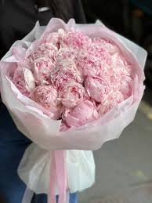
Soft pink peonies say "You're amazing and I appreciate you." They're cheerful without being obnoxious. Like the friend who's always in a good mood but not aggressively so.
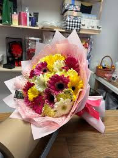
Beautiful presentation meets convenience. Already wrapped, ready to gift. Because you're thoughtful, but also busy. We understand. Your recipient will still be thrilled.
We believe flowers aren't just plants. They're therapy. They're apologies. They're celebrations. They're the thing you give when you're out of words but overflowing with feelings.
Whether you're attempting to impress a date, survive a wedding, extend sympathy, or just remind someone they matter—we've got the perfect blooms for the job. Fresh. Beautiful. Ready to make moments memorable.
FloralXpress: Because sometimes flowers say it better.